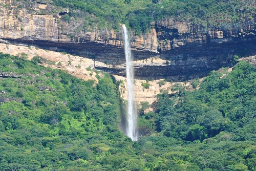

Informações técnicas sobre relevo, população, IDH etc.
| INFORMAÇÕES | |
|---|---|
| Municípios limítrofes | Pires Ferreira, Reriutaba, Guaraciabaz do Norte, Hidrolândia, Pires Ferreira, Guaraciaba do Norte, Croatá e Ipueiras |
| Fundação | 26 de agosto de 1840 (180 anos) |
| Área total | 630,468 km² |
| Clima | Tropical subúmido |
| IDH | 0,618 — médio |
| PIB | R$ 6 946,03 |
| INFORMAÇÕES TERRITORIAIS | |
|---|---|
| Número de habitantes | 41 964 habitantes |
| Superfície de Ipu |
62 931 hectares
629,31 km² (242,98 sq mi) |
| Densidade populacional | 66,7 ha./km² |
| Altitude de Ipu | 238 metros de altitude |
| Coordenadas geográficas decimais |
Latitude:
-4.32298
Longitude: -40.7106 |
| Coordenadas geográficas sexagesimais | Latitude: 4° 19' 23'' Sul , Longitude: 40° 42' 38'' Oeste |
| INFORMAÇÕES DO MUNICÍPIO | |
|---|---|
| Endereço da Prefeitura Municipal de Ipu |
Ipu
Prefeitura de Ipu
Pça. Abílio Martins, s/n IPU - CE, 62250-000 Brasil Work +55 88 3683-2022 Fax +55 88 3683-2008 |
| Telefone da prefeitura |
(88) 3683-2022
Internacional: +55 88 3683-2022 |
| Fax |
(88) 3683-2008
Internacional: +55 88 3683-2008 |
| Endereço eletrônico da prefeitura |
pmipu-ce@sobralnet.com.br
|
| Site oficial do município | ipu.ce.gov.br |
| INFORMAÇÕES DO ADMINISTRATIVAS | ||
|---|---|---|
| Prefeito de Ipu | ROBERIO WAGNER MARTINS MOREIRA | |
| Partido politico | PC do B | |
| INFORMAÇÕES DE TRANSPORTE | |
|---|---|
| Transporte urbano disponível | - |
| Aeroporto |
Aeroporto Internacional Pinto Martins
Aeroporto de Sobral
82.5 km
Aeroporto Internacional Prefeito Dr.João Silva Filho
195.4 km
|
| INFORMAÇÕES DE DISTÂNCIA A OUTRAS CIDADES | ||
|---|---|---|
| São Paulo : 2233 km | Rio de Janeiro : 2086 km | Brasília : 1500 km |
| Salvador : 993 km | Belo Horizonte : 1760 km | Manaus : 2150 km |
| Curitiba : 2521 km | Fortaleza : 250 km mais perto | Goiânia : 1662 km |
| Belém : 923 km | Porto Alegre : 3068 km | Guarulhos : 2213 km |
| Campinas : 2179 km | São Luís : 447 km | São Gonçalo : 2.572 km |
| Distância calculada em linha reta! | ||
Conheça mais sobre a história de Ipu.
Inicialmente o povoado nasceu dentro das terras dadas em sesmarias pelo estado português a alguns colonos radicados em Pernambuco. Ligada às terras da Matriz de São Gonçalo da Serra dos Côcos (hoje em Ipueiras) e à sede da primeira Vila (Guaraciaba do Norte), a povoação foi construída em cima de um velho cemitério indígena. A sua praça central (chamada por seus habitantes de Praça da Igrejinha) está localizada neste "útero inicial" em que aquela sociedade veio a nascer ainda no século XVII. A região entrou em disputa entre padres Jesuítas e colonos, até que, após a expulsão dos jesuítas do Brasil pelo Marquês de Pombal, as terras e os indígenas que nela habitavam ficaram entregues aos colonos europeus. Foram tornados escravos (ou semi escravos), os indígenas foram incorporados àquela sociedade colonial do antigo Ceará..
Apenas em 1840/41 a Vila Nova do Ipu Grande fora transformada em sede da Vila, sendo em 1885 elevada à condição de cidade. Em 1894, com a instalação da Estrada de Ferro de Sobral, a cidade passou a crescer e urbanizar-se lentamente. A economia comerciária, promovida pela ferrovia, possibilitou à classe comerciária local adquirir capitais gerados do trabalho e do comércio algodoeiro. A cidade crescia e com isso aumentavam os problemas. As elites conheceram um crescimento significativo, para depois mergulharem numa estagnação econômica acarretada pela desativação da ferrovia e do comércio a ela ligado.
Nos anos 40 do século XX, a cidade mergulha num processo de decadência até culminar com o completo desmonte da ferrovia nos anos 50, 60 e 70 do século passado. Decadente, a cidade transforma-se num verdadeiro "curral-eleitoral" para a oligarquia local; momento em que a prefeitura da cidade transforma-se na maior empregadora do município. Em 1987 o então distrito Pires Ferreira, se emancipa de Ipu, transformando-se em um novo município.
Os principais bairros do Ipu são o Reino de França, o Corte, o Alto dos 14, o Pereiros, as Pedrinhas, o Bergdorf, os Canudos, a Boa Vista, a Nova Aldeota, o Cafute, a Mina, a Caixa D' Água, a Lagoa e as Casas Populares.
Saiba mais sobre os melhores lugares e o que fazer em Ipu.
Bica do Ipu é uma queda d'água de 130 metros de altura do Riacho Ipuçaba, que despenca da Serra da Ibiapaba, no município brasileiro de Ipu no estado do Ceará. No volume 16º da Enciclopédia dos Municípios Brasileiros a bica também recebe a denominação de Bica de Iracema. Faz parte do espaço do romance Iracema de José de Alencar.

Veja como chegar nos melhores pontos de Ipu.